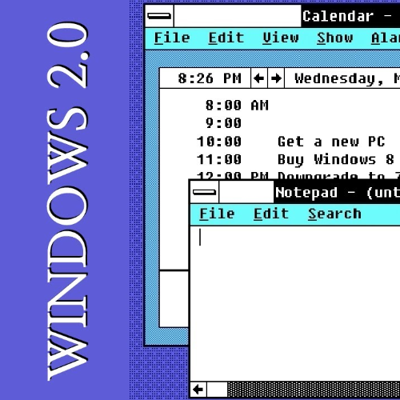

About
Windows 2.0 , a significant release from Microsoft, launched on December 9, 1987, following Windows 1.0. This iteration featured two versions: a base edition for 8086 real mode and an enhanced edition, Windows/386, for i386 protected mode. It brought advancements such as the ability to overlap and resize application windows, introducing desktop icons, keyboard shortcuts, and supporting 16-color VGA graphics. Additionally, Microsoft Word and Excel made their debut within this operating environment. Recognized as an improvement over its predecessor, Windows 2.0 garnered increased sales and popularity. However, it was also seen as an evolving incarnation of the system. Notably, Apple Inc. filed a lawsuit against Microsoft in March 1988, alleging copyright infringement due to the introduction of overlapping windows. Ultimately, the judge ruled in favor of Microsoft. Windows 2.0 was succeeded by Windows 2.1 in May 1988, and Microsoft concluded its support for this version on December 31, 2001.
Release versions
The operating environment was offered in two distinct versions tailored for different CPUs. The base edition supported the 8086 mode of the 80386 microprocessor. Despite this configuration, it functioned on an 8088 or 8086 processor, albeit without access to the high memory area on an 8086-class processor. However, expanded memory remained usable. Notably, IBM's PS/2 Model 25 shipped with Windows configured for 8086 hardware in certain educational market kits. This base edition was later renamed Windows/286 upon the release of Windows 2.1 in 1988. On the other hand, there was another variant called Windows/386, available as early as September 1987, preceding the official release of Windows 2.0 in December 1987. Windows/386 was significantly more advanced. It introduced a protected mode kernel where the GUI and applications ran as a virtual 8086 mode task. This variant offered fully preemptive multitasking and allowed multiple MS-DOS programs to run concurrently in "virtual 8086" CPU mode. Each DOS application could access available low memory before Windows was initiated, with EMS emulation and memory management features of the i386 expanding RAM beyond 640k. However, disk-based virtual memory was not supported, requiring multiple DOS programs to fit within the available physical memory. Consequently, users could run more applications on the 386 version.
Both versions were incompatible with DOS memory managers like CEMM or QEMM, as well as with DOS extenders that had their extended memory management and ran in protected mode. This limitation was addressed in version 3.0, which supported the Virtual Control Program Interface (VCPI) in "standard mode" and the DOS Protected Mode Interface (DPMI) in "386 enhanced" mode. Microsoft concluded its support for Windows 2.0 on December 31, 2001.
System requirements
The official system requirements for Windows 2.0 include the following.
| Windows 2.01 | Windows 2.03 | |
|---|---|---|
| CPU | 80286 or 80386 processor | 80286 or 80386 processor |
| RAM | 256 KB of memory | 256 KB of memory |
| Storage | Two double-sided floppy disk drives or a hard disk | Two double-sided floppy disk drives or a hard disk |
| Video | EGA or VGA adapters | EGA or VGA adapters |
Windows 2.0 was dependent on the DOS system and random-access memory was restricted to a maximum of 1 MB due to running in real mode.
Reception
Windows 2.0 is generally viewed as an incremental improvement over its predecessor but was still considered a work in progress. Despite this, its enhancements led to increased popularity for Microsoft Windows after its release, and its interface was deemed easier to navigate. Stewart Alsop II, in January 1988, anticipated a gradual transition to a graphical environment on IBM-style machines, driven primarily by market forces due to the GUI's perceived deficiencies, necessitating users to switch to DOS for many tasks. CNET's assessment was critical, stating that Windows 2.0 "wasn't much better than Windows 1.0." However, BYTE magazine recognized it as a distinguished winner of the BYTE Awards in 1989, positioning it as formidable competition for OS/2, given its utilization of the 80386's capabilities. The operating environment was priced at $99. Despite sales reaching one million in 1988 and less than two million by January 1990, Windows 2.0 did not achieve widespread use. It was succeeded by Windows 2.1, released in the United States and Canada in May 1988.
Legal conflict with Apple
- In March 17, 1988, Apple Inc. initiated legal action against Microsoft and Hewlett-Packard, alleging copyright infringement related to the Macintosh System Software.
- Apple contended that the overall "look and feel" of the Macintosh operating system was safeguarded by copyright and that Windows 2.0 violated this copyright by incorporating similar icons.
- The court ruled in favor of Hewlett-Packard and Microsoft concerning the majority of the 189 graphical user interface elements contested by Apple.
- However, the court acknowledged infringement on 10 GUI elements, but ultimately determined that these specific elements could not be copyrighted.